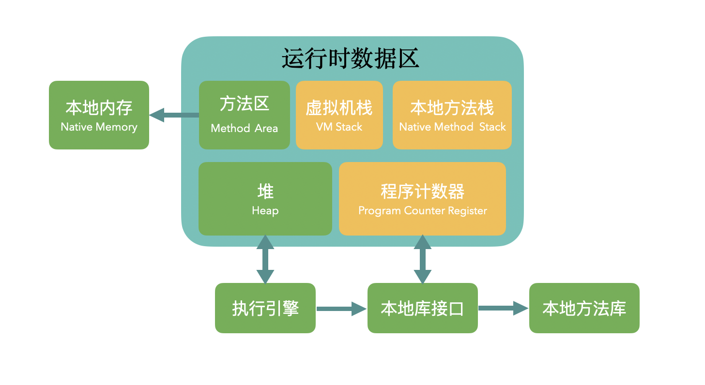
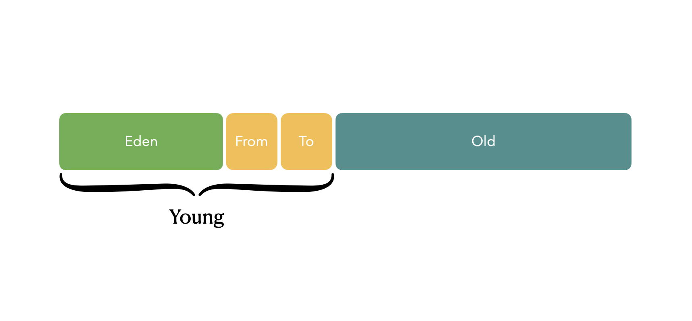
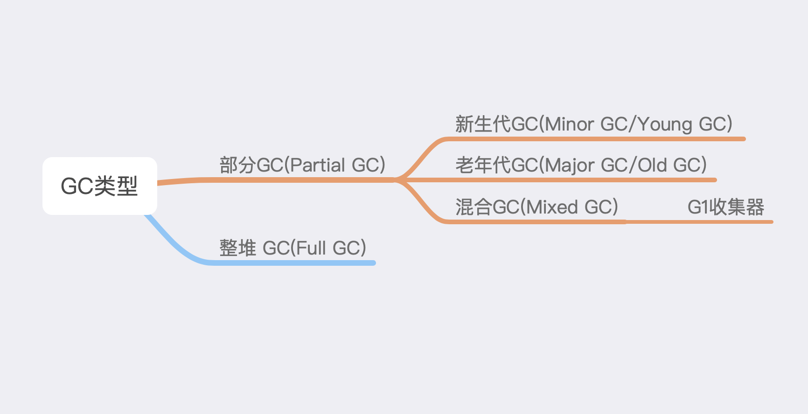

JVM系列-读懂 GC 日志
Java 生态发展到今天，JVM （Java Virtual Machine）的价值可能已经超过了 Java 语言本身。
而 GC （垃圾回收）机制也是 JVM 的核心之一，在程序运行的过程中，GC 的过程会以日志的形式记录下来，看懂 GC 日志是研究 GC 机制的基础，GC日志也是判断 Java 程序运行是否正常的重要依据。
这篇文章将会从多个方面来详细说明 GC 日志，本文基于 OpenJDK1.8 和 HotSpot 虚拟机。
在开始说明 GC 机制之前，需要先了解一下相关的内容。
$ java -version
openjdk version "1.8.0_40"
OpenJDK Runtime Environment (build 1.8.0_40-b25)
OpenJDK 64-Bit Server VM (build 25.40-b25, mixed mode)
上面是使用 java -version 打印出来的信息，里面信息量很大，比如上面表明这个 JDK 是 openjdk1.8，当前 JVM 是 Server VM，使用的是混合执行模式。
JVM 分为 Client VM 和 Server VM，Client VM 适用内存小，适合一些交互性强的场景，比如桌面应用，Server 则适用于内存大的服务端环境。
可以使用下面的命令进行 JVM 的切换。
$ java -client -version
$ java -server -version
但是需要注意，对于 64 位的 JDK，只有 Server VM， Java 已经放弃桌面应用，以后重点关注 Server VM 就可以。
Java 是一门复杂的语言，既能解释执行，也能编译执行，也可以两种方式共存，默认就是两种方式并存 (mixed mode)，由 JVM 来决定把哪些代码编译执行。
这三种执行方式也可以进行切换：
$ java -Xint -version # 完全解释执行
$ java -Xcomp -version # 完全编译执行
$ java -Xmixed -version # 混合执行
Client VM 和 Server VM 的 GC 机制不一样，这篇文章中，我们只关注 Server VM 的 GC。
JVM 内存模型
下面这两张图很重要，只要提到 JVM，就会用到下面两张图（HotSpot 虚拟机）。
JVM 内存模型如下：

在 Java 8 以后，使用元空间来实现方法区，并且不占用堆内的空间，而是使用本地内存来实现。
堆内部的各个区域分布如下：

其中 Eden、from 和 to 区域称为新生代（Young）区域，这三个区域大小的比例默认为 8:1:1，整个新生代区域和老年代区域的比例为 1:2。
GC 基本分类
GC 总体上可以分成两类，对部分区域的 GC 和整堆的 GC（Full GC），一般情况下，只会发生部分区域的 GC，如果经常发生整堆的 GC，可能存在内存泄漏等情况。
对部分区域的 GC 有可能发生在新生代（Minor GC），也有可能发生老年代（Major GC）。
也有一种特殊的情况，如果使用的是 G1 收集器，那么会同时对新生代和老年代进行 GC。

当我们在说到 JVM 的 GC 时，一般都指对 JVM 堆的回收，大多数情况下，只有堆内的内存才会被回收。
GC 参数
默认情况下，Java 程序在运行时并不会打印 GC 日志，需要加上下面的 JVM 参数：
-verbose:gc # 控制台打印 gc 日志
-XX:+PrintGCDetails # 打印 gc 过程的细节
-XX:+PrintGCDateStamps # 打印 gc 的发生的时间戳
如果想保存为文件，则需要加上下面的参数，需要注意的是，如果保存为文件，则控制台就不再打印 gc 日志：
-Xloggc:gc.log # 将 gc 日志保存成文件，默认在项目的根目录，可以根据项目的情况进行调整
还有一些其他辅助性的参数:
-XX:+PrintGCApplicationStoppedTime # 打印 stop world 的时间
-XX:+PrintGCApplicationConcurrentTime # 打印程序未中断运行的时间
-XX:+PrintHeapAtGC # 打印 GC 前后的堆栈信息
-XX:+PrintTenuringDistribution # 打印每次 minor GC 后新的存活周期的阈值
认识 GC 日志
首先来了看一段基本的日志，设置的参数为：
-Xms8m
-Xmx8m
-verbose:gc
-XX:+PrintGCDetails
-XX:+PrintGCDateStamps
-XX:+PrintGCApplicationStoppedTime
-XX:+PrintGCApplicationConcurrentTime
-XX:+PrintHeapAtGC
-XX:+PrintTenuringDistribution
然后执行下面的代码：
public class NoGC {
public static void main(String[] args) {
System.out.println("No gc");
}
}
产生的日志如下：
Heap
PSYoungGen total 2048K, used 1400K [0x00000000ffd80000, 0x0000000100000000, 0x0000000100000000)
eden space 1536K, 91% used [0x00000000ffd80000,0x00000000ffede3d0,0x00000000fff00000)
from space 512K, 0% used [0x00000000fff80000,0x00000000fff80000,0x0000000100000000)
to space 512K, 0% used [0x00000000fff00000,0x00000000fff00000,0x00000000fff80000)
ParOldGen total 5632K, used 0K [0x00000000ff800000, 0x00000000ffd80000, 0x00000000ffd80000)
object space 5632K, 0% used [0x00000000ff800000,0x00000000ff800000,0x00000000ffd80000)
Metaspace used 3018K, capacity 4496K, committed 4864K, reserved 1056768K
class space used 323K, capacity 388K, committed 512K, reserved 1048576K
运行上面的代码之后，就会产生上面的日志，上面的日志显示在运行这段代码的时候还没有进行 GC，只是把堆的内存状态打印出来了。
上面的 Heap 表示这是 JVM 的堆，主要分成三个部分，PSYoungGen（新生代），ParOldGen（老年代） 和 Metaspace（元数据空间，也就是方法区）。
需要注意的是，元空间不从堆里面分配内存，而是使用堆外内存，也就是直接从运行的机器上分配内存。但结构上与堆在一起，元空间还有一个名称是非堆。
PSYoungGen 表示的是新生代，并且使用 Parallel Scavenge 收集器来 GC，ParOldGen 表示老年代，并且使用 Parallel old 收集器来 GC，Server VM 使用的就是这对收集器的组合。
新生代分成 eden、from 和 to 三个区域，from 和 to 区域也称之为 Survivor 区域，在上面的日志中，我们可以看出每个区域所占的大小以及使用情况。
老年代没有再细分为其他的区域，那些在新生代没有被淘汰的的对象会进入老年代。
发生部分 GC
执行下面这段代码：
public class NormalGC {
public static void main(String[] args) throws InterruptedException {
Object o = new Object();
for (int i = 0; ;i++) {
Thread.sleep(1000);
byte[] b = new byte[1024 * 1024];
b = null;
}
}
}
产生的 GC 日志如下：
{Heap before GC invocations=1 (full 0):
PSYoungGen total 2048K, used 1536K [0x00000000ffd80000, 0x0000000100000000, 0x0000000100000000)
eden space 1536K, 100% used [0x00000000ffd80000,0x00000000fff00000,0x00000000fff00000)
from space 512K, 0% used [0x00000000fff80000,0x00000000fff80000,0x0000000100000000)
to space 512K, 0% used [0x00000000fff00000,0x00000000fff00000,0x00000000fff80000)
ParOldGen total 5632K, used 0K [0x00000000ff800000, 0x00000000ffd80000, 0x00000000ffd80000)
object space 5632K, 0% used [0x00000000ff800000,0x00000000ff800000,0x00000000ffd80000)
Metaspace used 3136K, capacity 4496K, committed 4864K, reserved 1056768K
class space used 333K, capacity 388K, committed 512K, reserved 1048576K
[GC (Allocation Failure)
Desired survivor size 524288 bytes, new threshold 7 (max 15)
[PSYoungGen: 1536K->496K(2048K)] 1536K->560K(7680K), 0.0024873 secs] [Times: user=0.01 sys=0.00, real=0.01 secs]
Heap after GC invocations=1 (full 0):
PSYoungGen total 2048K, used 496K [0x00000000ffd80000, 0x0000000100000000, 0x0000000100000000)
eden space 1536K, 0% used [0x00000000ffd80000,0x00000000ffd80000,0x00000000fff00000)
from space 512K, 96% used [0x00000000fff00000,0x00000000fff7c010,0x00000000fff80000)
to space 512K, 0% used [0x00000000fff80000,0x00000000fff80000,0x0000000100000000)
ParOldGen total 5632K, used 64K [0x00000000ff800000, 0x00000000ffd80000, 0x00000000ffd80000)
object space 5632K, 1% used [0x00000000ff800000,0x00000000ff810000,0x00000000ffd80000)
Metaspace used 3136K, capacity 4496K, committed 4864K, reserved 1056768K
class space used 333K, capacity 388K, committed 512K, reserved 1048576K
}
Total time for which application threads were stopped: 0.0029243 seconds, Stopping threads took: 0.0000297 seconds
Application time: 1.0001808 seconds
先整体来看一下这个日志的结构。
最前面一部分是进行 GC 之前堆内存的分配情况，invocations 表示垃圾回收的次数，括号里面是发生 Full GC 的次数。
然后就是 GC 回收的细节，下面详细说，再然后是 GC 之后堆的内存分配情况，与 GC 的之前堆的情况可以有个对比。
倒数第二行是 PrintGCApplicationStoppedTime 参数打印出来的信息，表示因为 GC 而产生的停顿时间。最后一行是 PrintGCApplicationConcurrentTime 参数所打印出来的信息，表示程序运行的时间。
下面来看 GC 的回收细节，通过上面的日志可以看到新生代的 eden 区已经满了，然后就出现了下面这条日志:
[GC (Allocation Failure)
Desired survivor size 524288 bytes, new threshold 7 (max 15)
[PSYoungGen: 1536K->496K(2048K)] 1536K->560K(7680K), 0.0024873 secs]
[Times: user=0.01 sys=0.00, real=0.01 secs]
这条日志就是在新生代进行了 minor GC。
第一行表示发起这次 GC 的原因是分配新的内存失败（Allocation Failure），第二行是因为我们加上了 -XX:+PrintTenuringDistribution 这个参数，它会打印出新生代对象的年龄，以及对象进入老年代的年龄阈值，这里默认是 7，最大是 15 ，可以通过参数进行调整。
第三行就是具体的回收信息，PSYoungGen 表示这是发生在新生代的回收，分开来看各部分：
- 1536K->496K(2048K) 表示：回收前该区域已使用的空间→回收后该区域使用的空间(该区域总空间)，这里是指新生代区域
- 1536K->560K(7680K) 表示：回收前堆中已使用的空间→回收后堆中已使用的空间(堆的总空间)
- 0.0024873 secs：表示 GC 进行的时间，单位为秒
- Times: user=0.01 sys=0.00, real=0.01 secs： 这部分也是对 GC 时间进行统计，但是是从操作系统的角度来统计，分被表示用户态时间，内核态时间和时钟时间
发生 Full GC
执行下面的代码就会发生 Full GC：
public class FullGC {
public static void main(String[] args) {
int size = 1024 * 1024;
byte[] b = new byte[size];
b = null;
System.gc();
}
}
Full GC 其他的部分与上面部分 GC 基本一致，下面重点来看发生 Full GC 时，各个区域的回收情况：
[Full GC (System.gc())
[PSYoungGen: 480K->0K(2048K)]
[ParOldGen: 1104K->473K(5632K)]
1584K->473K(7680K),
[Metaspace: 3107K->3107K(1056768K)],
0.0055681 secs]
[Times: user=0.02 sys=0.00, real=0.01 secs]
第一行是表示这次发生的是 Full GC，发起的原因是调用了 System.gc()。
第二行和第三行分别表示对新生代和老年代的回收，回收先后各个区域占用的内存情况都会打印出来。
第四行同样表示整个堆内存的回收情况。
第五行表示对元空间也进行了垃圾回收，虽然什么也没有回收成功。
如果内存泄露或溢出
OutOfMemoryError 是一种常见的错误，一般在抛出这个异常之前，都会出现一次 Full GC。
public class Leak2GC {
public static void main(String[] args) {
Vector strings = new Vector();
for (int i = 0; ;i++) {
String str = new String("Hello gc" + i);
strings.add(str);
str = null;
}
}
}
执行上面的代码之后，就会出现下来的日志：
[Full GC (Allocation Failure)
[PSYoungGen: 943K->943K(2048K)]
[ParOldGen: 5556K->5539K(5632K)]
6499K->6483K(7680K),
[Metaspace: 3135K->3135K(1056768K)],
0.0260635 secs]
[Times: user=0.14 sys=0.00, real=0.03 secs]
即使进行了 Full GC，也无法对各个区域进行有效的回收，在无法回收空间之后，就会报出下面的错误：
Exception in thread "main" java.lang.OutOfMemoryError: Java heap space
at java.util.Arrays.copyOf(Arrays.java:3210)
at java.util.Arrays.copyOf(Arrays.java:3181)
at java.util.Vector.grow(Vector.java:266)
at java.util.Vector.ensureCapacityHelper(Vector.java:246)
at java.util.Vector.add(Vector.java:782)
at cn.rayjun.java.java8.gc.Leak2GC.main(Leak2GC.java:12)
GC 信息统计分析
通过上面的内容，应该就可以看懂 GC 的日志信息了，在很多情况下，我们通过部分的日志无法判断问题。
所以就有必要对整体的 GC 情况进行统计，一般会借助其他的统计工具来进行。
最直接的方式就是使用 JDK 的内置工具，jstat ，具体使用如下，参数为 pid。
$ jstat -gc 24991
S0C S1C S0U S1U EC EU OC OU MC MU CCSC CCSU YGC YGCT FGC FGCT GCT
512.0 512.0 0.0 0.0 1536.0 1024.0 5632.0 4755.0 4864.0 3477.4 512.0 378.3 54 0.082 1 0.018 0.099
各个数据项的含义如下：
- S0C：from 区的大小
- S1C：to 区的大小
- S1U：from 区使用的大小
- S1U：to 去使用的大小
- EC：eden 区的大小
- EU：eden 去使用的大小
- OC：老年代的大小
- OU：老年代使用的大小
- MC：方法区的大小
- MU：方法区使用的大小
- CCSC：压缩类空间大小
- CCUS：压缩类空间使用的大小
- YGC：年轻代垃圾回收的次数
- YGCT：年轻代垃圾回收消耗时间
- FGC：老年代垃圾回收的次数
- FGCT：老年代垃圾回收消耗时间
- GCT：垃圾回收的总时间
也可以使用可视化的分析工具来对 CG 日志进行分析，比如 https://gceasy.io/。
如果使用其他的收集器
在上面的日志中，GC 使用的是默认收集器组合，我们也可以使用其他的收集器来，比如使用 UseConcMarkSweepGC 参数来启用 CMS收集器。
使用了这个收集器之后，日志如下：
[GC (Allocation Failure) [ParNew: 1384K->256K(2432K), 0.0022504 secs] 1384K->491K(7936K), 0.0022693 secs] [Times: user=0.00 sys=0.00, real=0.01 secs]
[Full GC (System.gc()) [CMS: 235K->472K(5504K), 0.0016647 secs] 1582K->472K(7936K), [Metaspace: 3009K->3009K(1056768K)], 0.0016851 secs] [Times: user=0.01 sys=0.00, real=0.00 secs]
稍微有了一点变化，新生代的收集器使用了 ParNew 收集器，老年代使用了 CMS收集器，日志其他部分的含义没有变化。
也可以根据自己的需求去使用其他的收集器。
文 / Rayjun